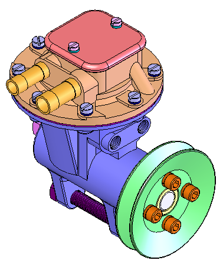
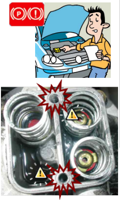

On vous confie une Peugeot 309 avec le problème suivant : « Lors du freinage, la pédale de frein reste dure et la voiture ne répond presque pas ». Cette Peugeot 309 est équipé d’une pompe à vide. Vous décidez de démonter cette pompe afin de procéder au remplacement de la membrane et des clapets. Lors du démontage, vous constatez que les trous taraudés du couvercle porte-clapet sont détériorés.
Vous devrez donc identifier les éléments de visserie figurant sur le plan et connaître leurs désignations afin de procéder aux différents remplacements, déterminer les dimensions des usinages à réaliser pour une implantation correcte de la vis rep. 03 et de réaliser le dessin de définition pour la réalisation des usinages.